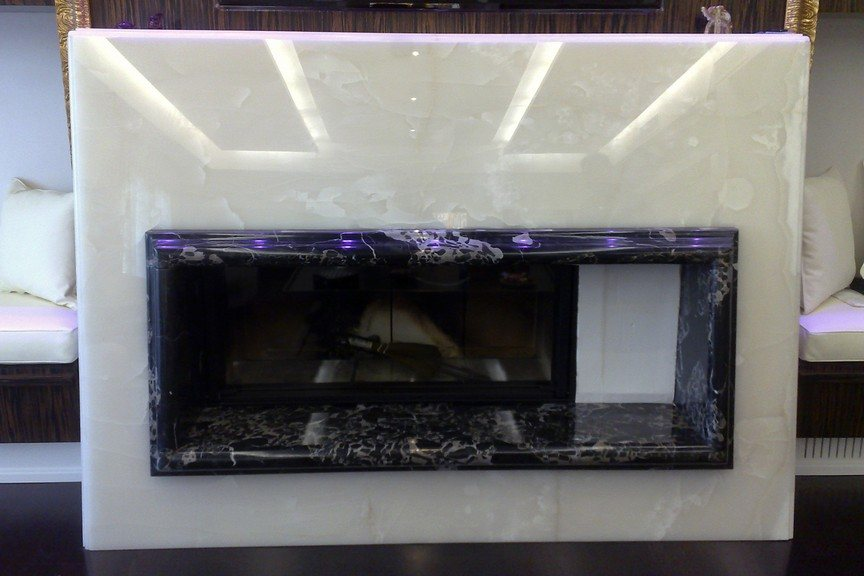
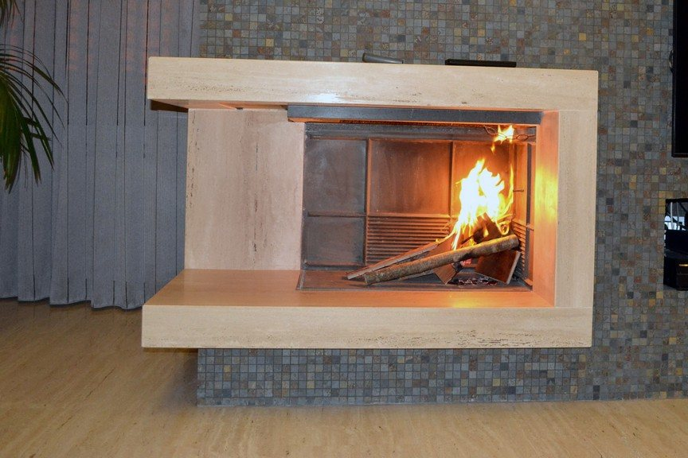
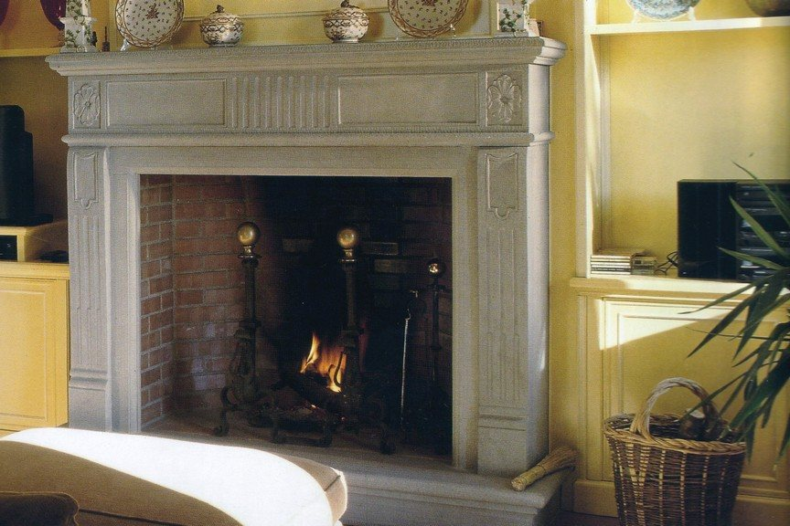
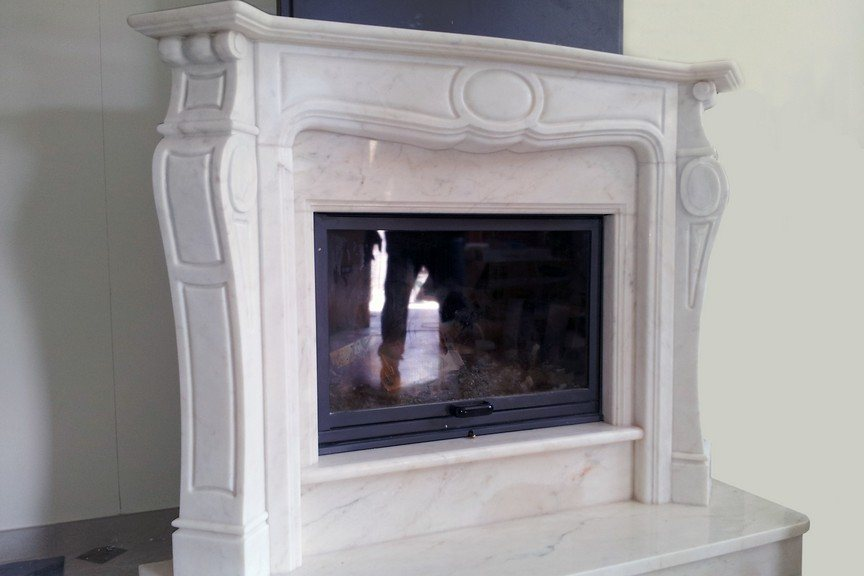
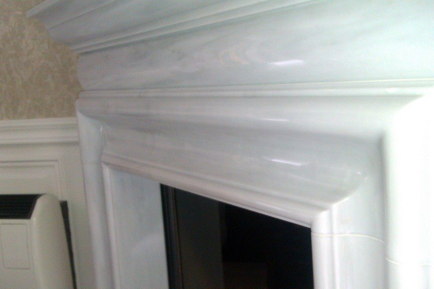
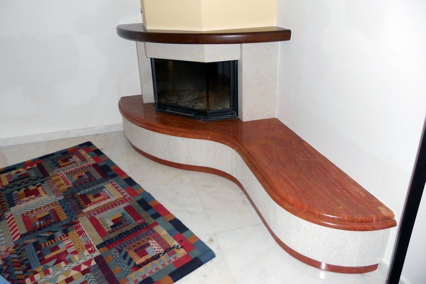
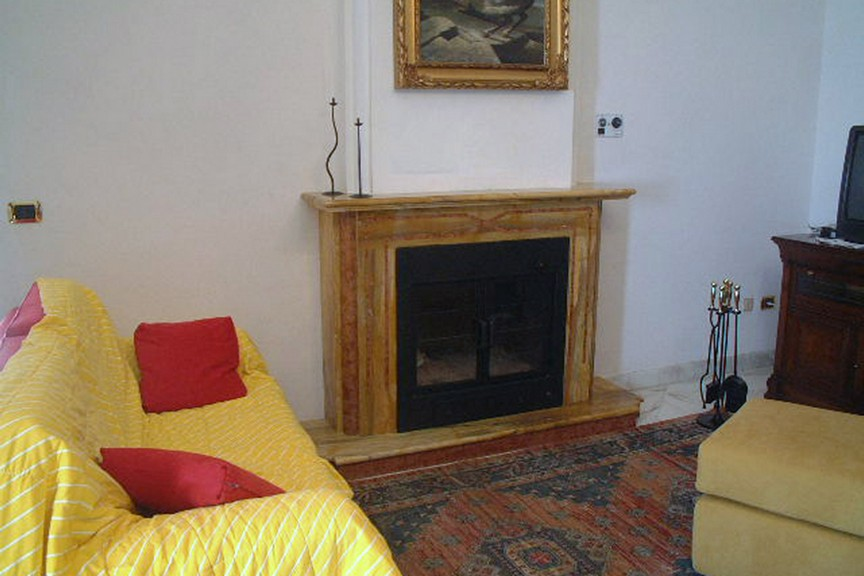
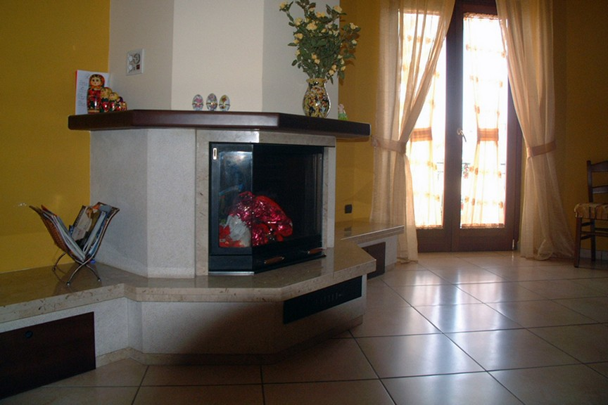
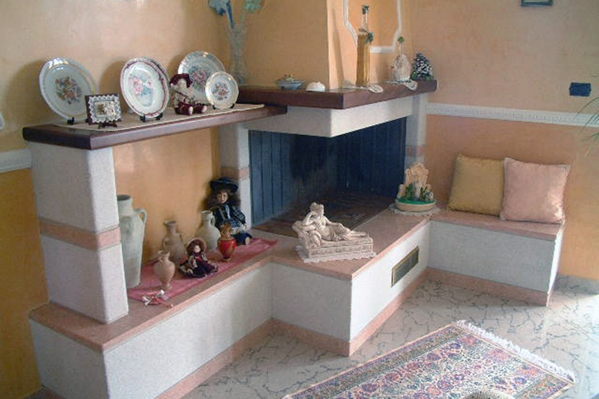
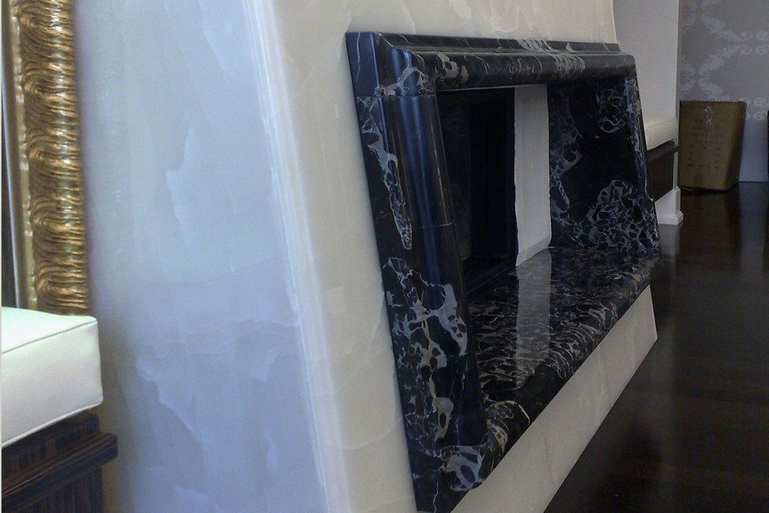

Camini in marmo a Caserta
Camini in marmo e pietra, lavorati con cura nei dettagli e nelle finiture, a partire dal progetto.
Nel laboratorio Euromarmisud realizziamo camini in diverse varietà di marmo e pietra. Tra i materiali lavorati ci sono il Bianco Statuario, l'Onice, il Portoro, il Trani, il Travertino romano e il Travertino Persiano, oltre al Rosa Portogallo, al Giallo Siena, al Rosso Verona e al Perlato di Sicilia.
Le lavorazioni comprendono elementi a massello, superfici bocciardate e motivi a rilievo. In un'abitazione privata abbiamo realizzato una parete camino in Onice. Ogni lavoro nasce da un progetto, sviluppato insieme ad architetti, designer d'interni o direttamente con il cliente.
| Pos. | Lavoro | Pietre |
|---|---|---|
| 1 | Camino in Onice con cornice in Portoro | Onice, Portoro |
| 2 | Camino a massello | Travertino romano |
| 3 | Camino con motivi a rilievo | Trani |
| 4 | Camino scolpito | Rosa Portogallo |
| 5 | Camino, dettaglio della cornice | Bianco Statuario |
| 6 | Camino curvo con piano sagomato | Trani bocciardato, Travertino persiano |
| 7 | Camino in salotto | Giallo Siena, Rosso Verona |
| 8 | Camino d'angolo | Perlato di Sicilia, Trani bocciardato |
| 9 | Camino con panca | Trani bocciardato, Rosa |
| 10 | Camino, angolo in Portoro | Onice, Portoro |
-

CAMCamino a masselloTravertino romano -

CAMCamino con motivi a rilievoTrani -

CAMCamino scolpitoRosa Portogallo -

CAMCamino, dettaglio della corniceBianco Statuario -

CAMCamino curvo con piano sagomatoTrani bocciardato, Travertino persiano -

CAMCamino in salottoGiallo Siena, Rosso Verona -

CAMCamino d'angoloPerlato di Sicilia, Trani bocciardato -

CAMCamino con pancaTrani bocciardato, Rosa -

CAMCamino, angolo in PortoroOnice, Portoro
Domande frequenti
Quali materiali utilizzate per realizzare camini in marmo?
Lavoriamo Bianco Statuario, Onice, Portoro, Trani, Travertino romano e Persiano, Rosa Portogallo, Giallo Siena, Rosso Verona e Perlato di Sicilia.
Realizzate camini con lavorazioni particolari?
Sì, realizziamo elementi a massello, superfici bocciardate, motivi a rilievo e pareti camino in Onice.
Le altre tavole
- PAVPavimenti in marmoPavimenti in marmo e intarsi policromi, con disegni che prendono forma attraverso l'accostamento delle pietre.
- SCAScale in marmoScale in marmo con bordature e accostamenti di pietre diverse, lavorate nel laboratorio Euromarmisud.
- PORPortali in pietraPortali in Trani classico, lavorati con finiture bocciardate e picconate e dettagli architettonici.
- FUNArte funerariaLavorazioni in pietra per cappelle gentilizie, realizzate con sobrietà e attenzione ai particolari.
Passa in laboratorio
Per parlare del tuo progetto o conoscerci di persona, chiamaci allo 0823 693073 oppure passa in laboratorio a Macerata Campania. Ti accoglieremo con piacere.
- Telefono
- 0823 693073Cellulare 393 9235457
- Laboratorio
- Via Starzolella
81047 Macerata Campania (CE) - Orari
- Da confermare
- info@euromarmisud.it
- Fax
- 0823 776193
- Indicazioni
- Apri il percorso su Google Maps